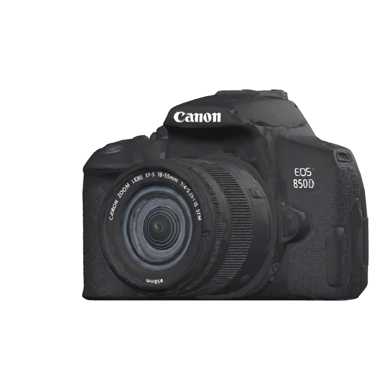
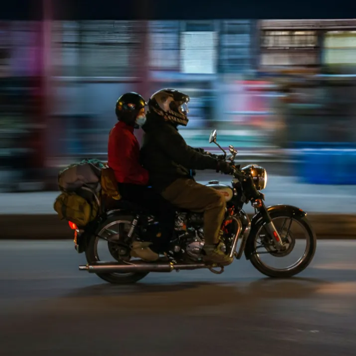
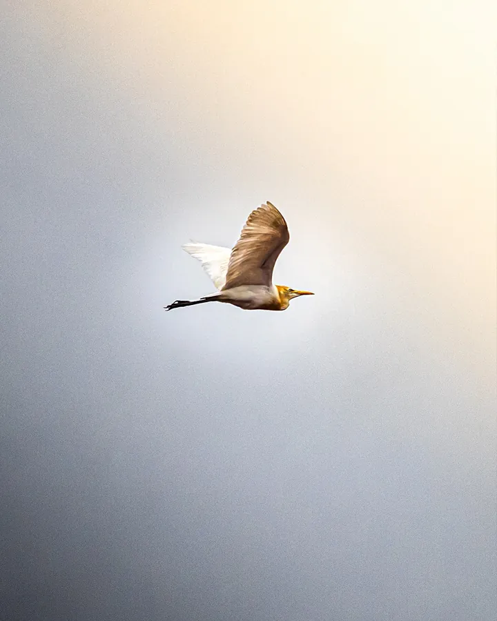
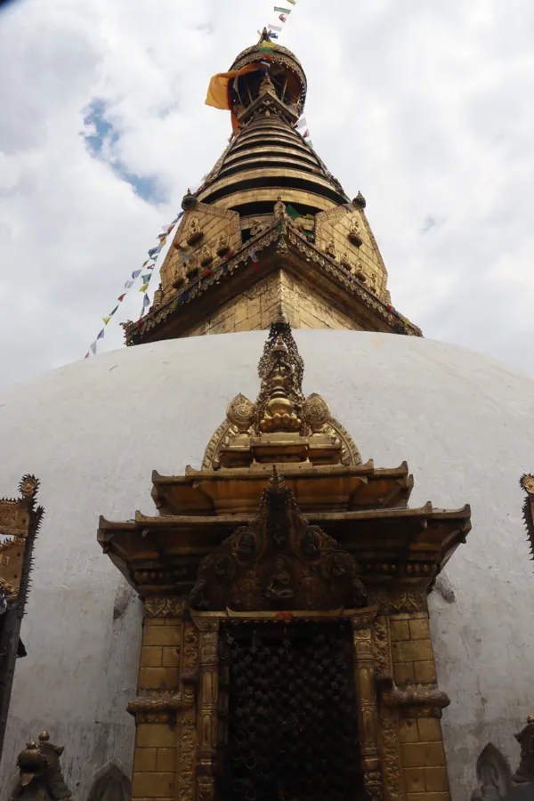
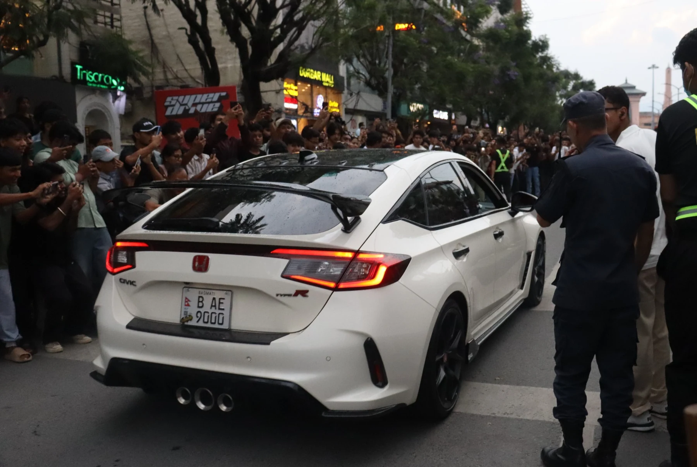
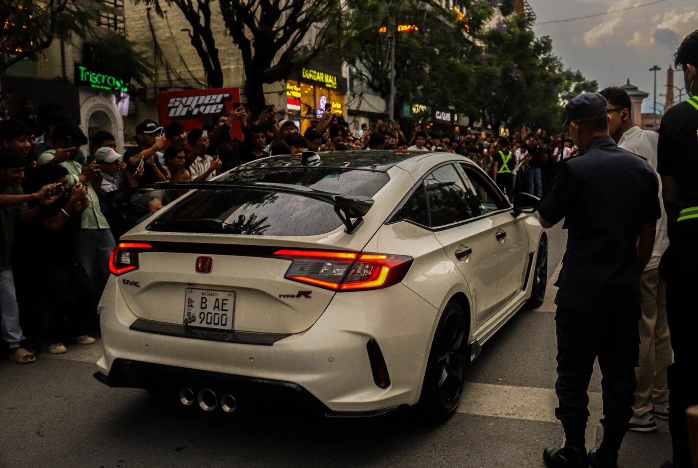

Canon EOS 850D
For still frames and moving stories.

THE WORLD, AS I SEE IT.
Photographer. Filmmaker.
Still figuring it all out.
I capture stories through light, motion and perspective.
 Hi, I’m Umanga.Student. Maker. Always looking.
Hi, I’m Umanga.Student. Maker. Always looking.


01 / A CONSTELLATION OF FRAMES
A bird. A passing street.
Something worth stopping for.
THE THINGS I MAKE THINGS WITH
Streets, everyday scenes, and the light close by.
For still frames and moving stories.
For everyday frames and wider scenes.
02 / CINEMATOGRAPHY
A little less routine.
A little more feeling.
A short reel about breaking routine, with a look inside the edit.
THE FEELING IN THE FRAME
My car photograph, before and after.
Slide to compare the edit.


03 / THE PERSON BETWEEN THE PROJECTS
A few things that make me, me.
Pick something up.
I’m a Grade 11 student in Nepal. I photograph wildlife, streets and small details, and turn everyday ideas into short films.
When the camera’s down: trekking, gaming, fitness, or trying to make an idea work in code.
Personal shoots, wildlife, street photographs and cinematic reels. Learning light and composition by going out and shooting.
Explore the kit ↗Helping with school photographs and videos. Teaching myself color grading, editing, web development and Flutter through personal projects.
An API-powered chatbot and image generator. Then QnA Book: a space for Class 10 students to ask questions and help each other through posts and comments.
And this portfolio — a home for everything I’m making.
Open the experiments ↗04 / BEYOND THE VIEWFINDER
Sometimes I put the camera down.
And make something you can use.
CURRENTLY / ALWAYS LEARNING
Natural light, composition and color.
Pacing, sound and camera movement.
Bird photography, trekking, gaming and fitness.
05 / SAY HELLO
A thought, a question, or just hello.